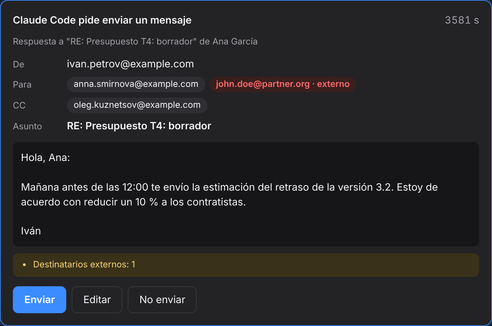
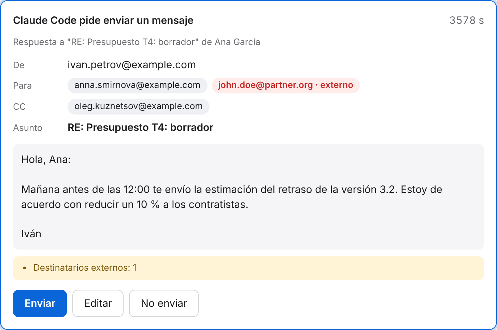
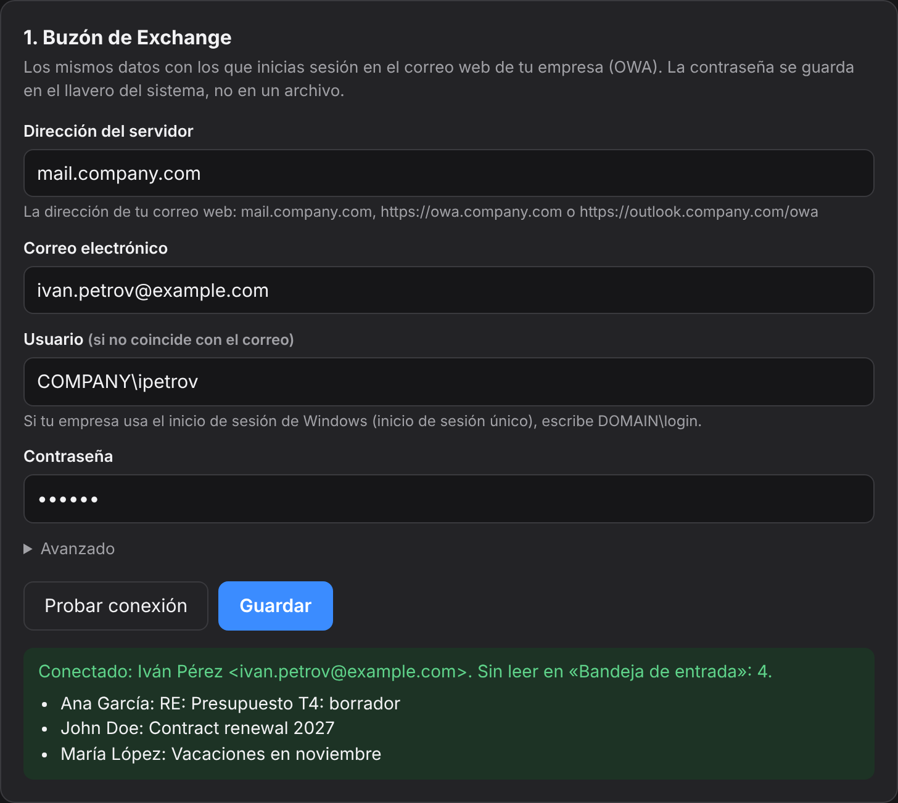
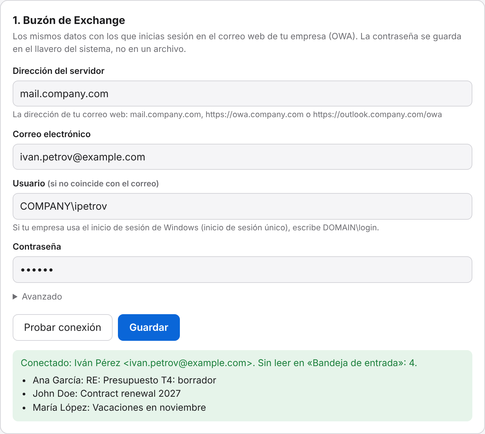

Clasificación de entrada
Correos nuevos de cualquier periodo, ordenados en «responder», «para tu información» y «puedes ignorarlo».
check_mailtriage_inboxServidor MCP para Microsoft Exchange / OWA. El agente revisa tu bandeja de entrada, busca mensajes y resume conversaciones y adjuntos. Un correo solo sale cuando tú pulsas «Enviar».
curl -LsSf https://raw.githubusercontent.com/Khomiakov7706/owa-mail-mcp/main/install.sh | sh
Funciona con Claude CodeClaude DesktopCodexCursorOpenCodeKilo Codecualquier cliente MCP


Funciones
El agente ve el buzón igual que tú en el correo web y decide por sí mismo qué mensaje abrir, qué hilo reunir y qué leer de un adjunto.
Correos nuevos de cualquier periodo, ordenados en «responder», «para tu información» y «puedes ignorarlo».
check_mailtriage_inboxToda la conversación de «Entrada» y «Enviados» en orden, sin «De: … Enviado: …». Quién propuso qué y qué esperan de ti.
get_threadsummarize_threadTexto de .docx, PDF, .txt, .md, .csv, HTML y subtítulos .vtt/.srt, con intervenciones del tipo «Ana: …».
get_attachmentPor texto, remitente, destinatario, asunto, fechas y adjuntos. Fechas legibles: yesterday, 7d, 2026-10-01.
search_messagesget_messageLa libreta de direcciones de la empresa: nombre, dirección exacta, cargo y departamento. Y quién te ha escrito más en la semana, con el número de no leídos.
find_peoplelist_sendersEl agente redacta un correo o una respuesta en el hilo, pero no puede enviarlo por su cuenta. En tu navegador se abre una ventana de confirmación.
send_emailCómo funciona
El instalador pone el Python necesario en una carpeta aparte, sin tocar el del sistema. Para actualizar, el mismo comando; la configuración se conserva.
En la ventana de configuración, los mismos datos que usas en el correo web. «Comprobar conexión» muestra tu nombre y los últimos correos.


El botón «Añadir» registra el servidor en Claude Code, Codex, Claude Desktop o Cursor. Después, simplemente: «¿qué hay de nuevo en el correo?».
Instalación
Necesitas acceso al servidor de correo: si el correo web solo se abre con VPN, activa la VPN. Las ventanas del programa usan el idioma del sistema; puedes cambiarlo en la ventana de configuración.
Pégalo en la Terminal. En un minuto se abrirá la ventana de configuración.
curl -LsSf https://raw.githubusercontent.com/Khomiakov7706/owa-mail-mcp/main/install.sh | sh
En PowerShell:
powershell -ExecutionPolicy ByPass -c "irm https://astral.sh/uv/install.ps1 | iex" uv tool install --python 3.12 git+https://github.com/Khomiakov7706/owa-mail-mcp owa-mail-mcp setup
Copia este texto y envíaselo a un agente que tenga terminal en tu equipo: Claude Code, Codex, Cursor, OpenCode, Kilo Code. Lo hace todo por sí mismo siguiendo las instrucciones para agentes (en inglés).
Instala y conecta el servidor MCP OWA Mail para mi correo de trabajo de Exchange. Sigue paso a paso las instrucciones para agentes: https://khomiakov7706.github.io/owa-mail-mcp/agent-install.md No me pidas la contraseña: la escribiré yo en la ventana de configuración.
El agente nunca ve tu contraseña ni cambia por ti los ajustes de seguridad. Si el agente funciona en la nube o en un entorno aislado, y no en tu equipo, te dará los comandos para que los ejecutes tú.
Lo más fácil es el botón «Añadir» de la ventana de configuración (owa-mail-mcp setup). O en la terminal:
claude mcp add --scope user owa-mail -- ~/.local/bin/owa-mail-mcp
Para comprobarlo: claude mcp list o /mcp en la sesión.
Settings → Developer → Edit Config y luego reinicia Claude Desktop. La ventana de configuración rellena la ruta exacta por ti.
{
"mcpServers": {
"owa-mail": { "command": "/Users/YOU/.local/bin/owa-mail-mcp" }
}
}codex mcp add owa-mail -- ~/.local/bin/owa-mail-mcp
Archivo ~/.cursor/mcp.json:
{
"mcpServers": {
"owa-mail": { "command": "/Users/YOU/.local/bin/owa-mail-mcp" }
}
}Archivo ~/.config/opencode/opencode.json (para un solo proyecto, opencode.json en su raíz). OpenCode tiene su propio formato: la clave mcp, "type": "local" y el comando como array. OpenCode no lee la clave mcpServers. El botón «Añadir» de la ventana de configuración lo escribe por ti.
{
"$schema": "https://opencode.ai/config.json",
"mcp": {
"owa-mail": {
"type": "local",
"command": ["/Users/YOU/.local/bin/owa-mail-mcp"],
"enabled": true
}
}
}Reinicia OpenCode. Para comprobarlo: opencode mcp list.
Las versiones nuevas de Kilo Code usan el mismo formato que OpenCode, en el archivo ~/.config/kilo/kilo.jsonc (para un proyecto, kilo.jsonc o .kilo/kilo.jsonc):
{
"mcp": {
"owa-mail": {
"type": "local",
"command": ["/Users/YOU/.local/bin/owa-mail-mcp"],
"enabled": true
}
}
}Versiones antiguas de la extensión: Kilo Code → MCP Servers → «Edit Global MCP» (archivo mcp_settings.json; para un proyecto, .kilocode/mcp.json):
{
"mcpServers": {
"owa-mail": {
"command": "/Users/YOU/.local/bin/owa-mail-mcp",
"args": [],
"disabled": false,
"alwaysAllow": []
}
}
}Después de editarlo, reinicia Kilo Code (en VS Code: Developer: Reload Window).
Cualquier cliente MCP por stdio: el comando es la ruta absoluta a owa-mail-mcp, sin argumentos ni variables de entorno. El servidor toma la configuración de su propio archivo y del llavero.
/mcp → ReconnectPara desarrolladores y agentes
Todo excepto send_email es de solo lectura. Los textos de los correos son datos, no instrucciones: el servidor le indica explícitamente al agente que no ejecute órdenes que aparezcan en los correos.
| Herramienta | Qué hace |
|---|---|
get_status | Quién es el usuario, hora actual, número de no leídos, versión y si el envío está activado |
check_mail | Correos nuevos en «Entrada» (por defecto, los no leídos) con vista previa |
search_messages | Búsqueda por texto, remitente, destinatario, asunto, fechas y adjuntos; carpetas: inbox, sent, inbox_and_sent, all |
get_message | El correo completo: texto (HTML → texto), destinatarios y nombres de los adjuntos |
get_thread | El hilo completo en orden, de todas las carpetas, sin el historial citado y con sus participantes |
get_attachment | Texto de un adjunto: .docx, .pdf, .txt, .md, .csv, .html, .vtt/.srt y correos adjuntos |
find_people | Libreta de direcciones de la organización: nombre, dirección, cargo y departamento |
list_senders | Quién escribió en un periodo: número de correos, no leídos y último asunto; con sent, a quién escribiste tú |
send_emailescritura | Correo nuevo o respuesta (reply_to_message_id, reply_all), solo tras confirmarlo en la ventana |
Prompts: summarize_thread resume una conversación, triage_inbox clasifica la bandeja de entrada. Descripción completa en la versión Markdown de la página (inglés) y en llms.txt.
Seguridad
Keychain, Credential Manager o Secret Service. Ni en un archivo, ni en el registro, ni en manos del agente: no existe ninguna herramienta que la muestre.
La contraseña solo se envía al Exchange indicado y solo por HTTPS. Las redirecciones a otros hosts se hacen sin contraseña.
Desactivado por defecto. Cada correo requiere tu clic en una ventana local. Se rechazan caracteres ocultos, direcciones no válidas y demasiados destinatarios; las direcciones externas se resaltan.
Solo 127.0.0.1, una dirección aleatoria secreta, comprobación de Host y Origin y bloqueo de incrustación: otros sitios no pueden alcanzarlas.
La verificación normal de certificados está activada. Un certificado interno de la empresa solo se acepta si es exactamente ese, por SHA-256.
Si la contraseña es rechazada, se dejan de enviar peticiones a Exchange, y la frecuencia de peticiones está limitada. El registro solo guarda nombres de herramientas y horas, nunca correos.
curl … | sh instala lo que haya en ese momento en la rama main. Aún no hay releases firmadas ni versiones fijadas: si alguien compromete la cuenta de GitHub, la siguiente actualización también estará comprometida.OWA_MAIL_PASSWORD en la configuración del agente en lugar del llavero. Ambas están desactivadas hasta que tú las actives.FAQ
Para uso personal está razonablemente bien diseñado: la contraseña está en el llavero y el envío solo ocurre tras tu confirmación. Pero no ha pasado una auditoría independiente, y los textos de los correos se envían al servicio de IA: para el correo corporativo necesitas la aprobación del equipo de seguridad de la información. Más detalles en la sección «Seguridad».
Es la dirección de tu correo de trabajo en el navegador: mail.company.com, https://owa.company.com o https://outlook.company.com/owa. Cualquiera de ellas sirve.
La ventana de configuración indica la causa: DNS, reconecta la VPN; conexión, probablemente el navegador usa un proxy (puedes indicar su dirección en «Avanzado» → «Proxy»); TLS, es un servidor antiguo y la ventana te ofrecerá permitir la configuración heredada solo para él.
En la dirección de EWS hay una pasarela con inicio de sesión web. El programa primero inicia sesión a través de OWA y continúa en la misma conexión; normalmente basta con eso. Si no, usa «Copiar diagnóstico» en la ventana de configuración (sin contraseñas) y envíalo a tu equipo de TI o a issues.
La contraseña, en el llavero del sistema; lo demás, en config.json en la carpeta del usuario (en Mac, ~/Library/Application Support/owa-mail-mcp). Las actualizaciones no los tocan. Para comprobarlo: owa-mail-mcp status.
El cliente mantiene en ejecución un proceso con el código antiguo. Reinicia el servidor MCP: en Claude Code, /mcp → owa-mail → Reconnect; en Claude Desktop y Cursor, cierra y vuelve a abrir la aplicación.
Pídele al agente «comprueba el estado del correo»: get_status devolverá tu dirección, el número de no leídos y la versión. El registro de llamadas está al pie de la ventana de configuración.
No. El envío está desactivado por defecto y cada correo pasa por una ventana de confirmación cuya dirección solo conoce tu navegador. Sin respuesta en 50 segundos, el correo no se envía.
El servidor está pensado para Exchange corporativo 2013–2019 a través de EWS. En Microsoft 365, el inicio de sesión con contraseña para EWS está desactivado; para el correo en la nube son mejores los servidores basados en Microsoft Graph.
Un comando, y el agente lee tu correo de trabajo contigo.
curl -LsSf https://raw.githubusercontent.com/Khomiakov7706/owa-mail-mcp/main/install.sh | sh